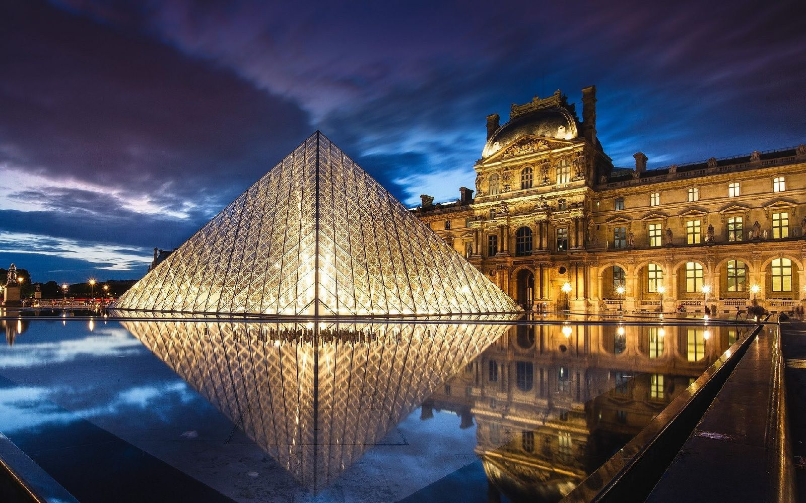
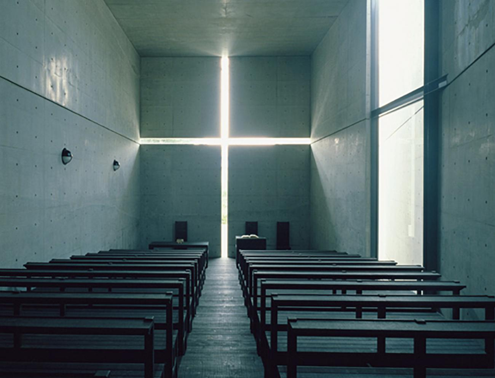
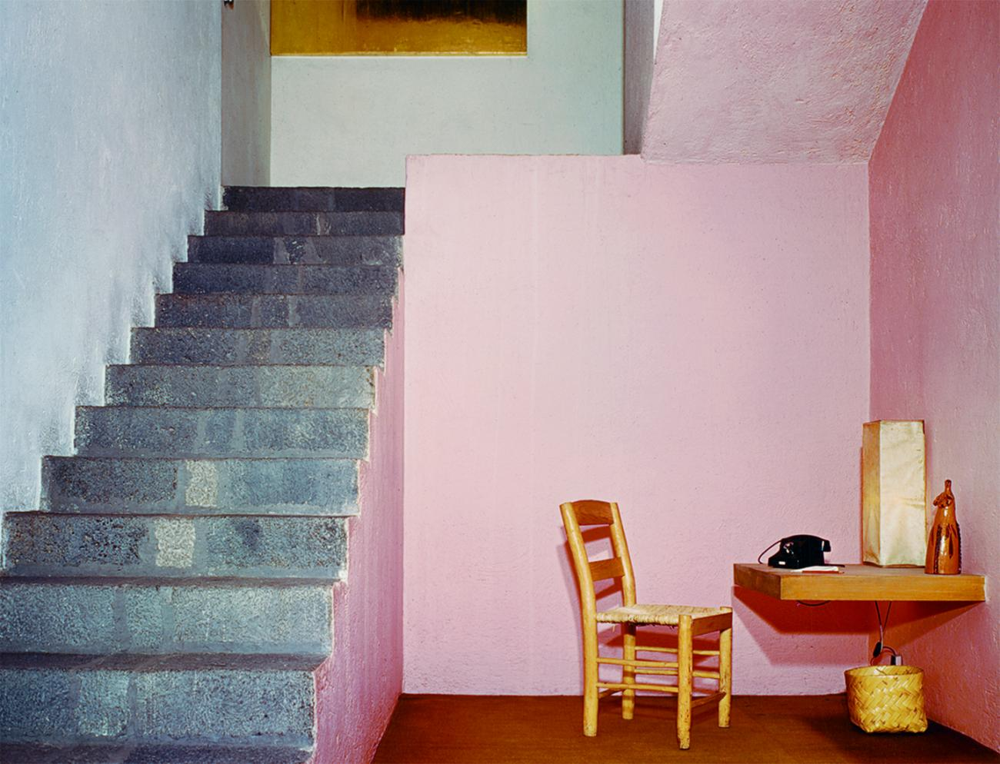

贝聿铭
I. M. Pei
用简单几何建立清晰的秩序
三角形、菱形、切面和清楚的轴线，让复杂空间显得容易理解。透明与石材并置，又让理性几何保留温度。
FOR ARKEVO
让字标、图标和版式共用一套几何规则。例如让 k／v 共用斜线角度，a／e／o 共用曲率；黑白、石色加一个识别色。
取舍最值得借的是比例和构成；直接画金字塔容易变成通用建筑标志。
ARCHITECTURE → VISUAL IDENTITY
20 位建筑师的视觉语言，
一份给 arkevo 的品牌灵感图册。
把空间中的几何、光线、色彩与材料，
转译成字标、图形、版式和动效。



选取国际知名、视觉辨识度高的建筑师，侧重现代与当代。以代表作作为观察入口，不作名次排名，也不把建筑师的一生压成一个标签。
作品事实与来源核查于 2026.10.09。VI 转译及色条是设计探索建议，并非建筑师的官方品牌规范。分类仅用于浏览，每人归入一个主要观察方向。
THE COLLECTION
显示全部 20 位
I. M. Pei
用简单几何建立清晰的秩序
三角形、菱形、切面和清楚的轴线，让复杂空间显得容易理解。透明与石材并置，又让理性几何保留温度。
让字标、图标和版式共用一套几何规则。例如让 k／v 共用斜线角度，a／e／o 共用曲率；黑白、石色加一个识别色。
取舍最值得借的是比例和构成；直接画金字塔容易变成通用建筑标志。
Tadao Ando
让空白和一道光成为主角
清水混凝土、基础几何、精确开口，依靠明暗和虚实形成力量。看起来元素很少，实际上每一道接缝和每一个空隙都在参与构图。
用留白构成独特形状。字标可以有一个有意义的断口；海报保留大面积空白，让一条亮线引出信息。
取舍只有灰色和留白，容易冷淡且缺少记忆点；不要照搬宗教符号。
Ludwig Mies van der Rohe
精确本身就是气质
钢、玻璃、水平线、规则框架，依靠精确比例和连接细节建立秩序。克制的外观背后，是很强的控制力。
把字体和排版精度做到足以独立识别品牌。稳定分栏、清楚层级、精准字距，搭配极少的辅助图形，表达可靠和清晰。
取舍制作容错低，稍微粗糙就会显得“什么也没设计”。
Le Corbusier
规则骨架里可以容纳自由
白色体块、细柱和水平长窗建立秩序，曲面与坡道又让空间不显僵硬。他的作品跨度很大，这里取其早期现代主义的一面。
固定网格，允许局部自由变化。矩形承担信息，曲线承担个性；大图可以跨栏，文字仍有明确对齐。
取舍适合大量延展，但需要独有的形状规则，否则容易成为普通现代主义模板。
Louis Kahn
用重量、轴线和空白表达长期价值
厚实几何、深窗洞、重复节奏和强烈轴线，使建筑具有庄重的存在感。空白占据中心，光与天空因此更有力量。
用一个强中心组织视觉。厚实字形、大留白、一条贯穿画面的细线，传达专注和长期主义。
取舍需要控制庄严感，否则创业公司可能看起来像研究机构或纪念馆。
Peter Zumthor
让质感比形状更令人记住
石材的纹理、接缝、光线和人的移动共同构成体验。吸引力来自细微差别：粗与细、暗与亮、冷与暖。
建立能被感受到的材质与摄影语言。暖灰、炭黑、矿物色，搭配细颗粒、真实侧光和缓慢显影。
取舍仅靠氛围图，品牌在小图标和纯文字场景里会缺乏辨识度。
Kazuyo Sejima
轻盈来自开放的关系
白色、玻璃、薄边和柔缓曲面，让空间显得轻盈。分隔不总靠墙，也可以靠距离、坡度和视线完成。
让模块之间有呼吸感。漂浮的内容块、细线、柔和曲线、少量低饱和色，表达开放与亲近。
取舍需要足够鲜明的字标；过细、过浅会同时损害阅读和品牌记忆。
Alvar Aalto
理性设计也可以有人的温度
清楚的现代体块中加入木材、自由曲面和不完全机械的节奏。规则仍然存在，但触感、材料和细节让它更亲近人。
清楚的信息结构，加一点不那么机械的形状。柔和转角、不等距线条、暖白和深绿，局部加入手感。
取舍适合聪明而温暖的表达；避免落到熟悉的“北欧生活方式”审美里。
Frank Lloyd Wright
把生长表现为层层展开
宽阔水平面、悬挑、错层，以及建筑与地景的连续关系，形成稳定而有生长感的构图。自然不仅贡献颜色，也决定空间的组织方式。
用层叠表达构建与成长。横向长条、错层版式、米白与岩石褐，动效让几个平面依次伸展。
取舍控制横线的数量和重量，避免品牌显得笨重，或直接像地产公司。
Kengo Kuma
一个小单元，可以长成复杂整体
细条、颗粒、编织和疏密变化，让建筑边界变得柔和。温度来自材料，也来自人可以理解和感知的小尺度。
设计一个可以反复组合的基本单元。一条短线或一个小形状，可以组成图标、纹理、海报和动态背景。
取舍价值在组合规则；如果只借木色，很容易成为普通“日式”风格。
Luis Barragán
颜色本身就能建立记忆
完整的大色面、粗粝灰泥、庭院与硬边日影，让强烈颜色依然显得安静。形状越少，色彩之间的关系就越重要。
用一个敢于大面积使用的颜色建立识别。配暖白和深色，小字偏置，保留整块空白；鲜明、有情绪但不喧闹。
取舍只照搬粉墙和阳光，会很像酒店或生活方式品牌。
Oscar Niemeyer
一条准确的曲线就够了
大胆弧线、简明剪影、白色体量，以及轻与重的对照，使建筑容易被记住。曲线通常很少，却承担了整个形象。
寻找一条可以独立识别品牌的弧线。成为字母的一部分、图片边界或动效轨迹；白底加少量红、蓝也很有力量。
取舍关键在曲线的准确性，随意圆润并不会自然产生个性。
Zaha Hadid
让不同部分成为同一股力量的延续
在这类代表作里，地面、墙和屋顶连续伸展；曲面、分叉和方向感共同形成流动。未来感来自各部分之间的连续关系。
让图形能流动、汇聚和展开。带状形态连接页面、产品模块与品牌动效；文字区保持稳定。
取舍需要独特曲率与运动规则，否则容易成为常见的“流体＋渐变”科技视觉。
Frank Gehry
通过折叠和碰撞获得张力
扭转曲面、相互碰撞的体块和变化的金属反光，形成雕塑般的存在感。观看角度和光线一变，形象也随之变化。
用可变折面创造发布级主视觉。折纸、切片、弯曲带状图形，可以生成一系列不同画面。
取舍制作成本较高；日常信息排版仍需保持清楚，避免变化吞掉识别。
Antoni Gaudí
让视觉像生命体一样生长
骨骼般的支撑、鳞片般的表面、连续曲线和彩色碎片，从整体到细节形成统一的生命感。装饰与结构彼此呼应。
建立“生长、聚合、分化”的视觉逻辑。细胞状纹样、蓝绿与珊瑚色、逐渐生成的动态图案，表达生命力与想象力。
取舍复杂度应放在大画面里，字标和小图标需要克制。
Norman Foster
把复杂技术组织得精确可见
玻璃、金属和重复结构形成工程秩序；规则单元沿整体轮廓逐渐变化，让复杂形体依然有清楚的逻辑。
用可解释的模块规则建立专业感。斜交网格、透明叠层、模块化图标，搭配银灰、深色和一个高亮色。
取舍适合精确和系统能力的表达；需要独特细节，避免接近常见企业科技品牌。
Renzo Piano
让系统的工作方式成为视觉
以这件早期作品为例：结构、管道、交通系统被直接展示，颜色帮助区分功能。建筑如何运作，本身就成了形象的一部分。
让颜色和连接线承担明确含义。不同模块使用固定功能色，动效呈现接通、传递与完成，表达开放与协作。
取舍不代表皮亚诺全部作品；没有真正的编码规则，多彩线条很快会成为噪声。
Jean Nouvel
通过遮蔽与显露制造层次
努维尔的作品随场所变化很大。这里的多层几何穹顶把阳光过滤成不断变化的光点，厚重结构因此产生轻盈感。
设计“逐步看见”的过程。镂空、遮罩、透明叠层和缓慢显影，可以形成独特的数字体验。
取舍借光与信息的组织方式；不要直接搬用文化纹样，过多叠层也会降低阅读效率。
看多层几何叠合怎样筛出不均匀的光点。
Ateliers Jean Nouvel；合作建筑师 Hala Wardé；图片 Abu Dhabi Tourism & Culture Authority／Sarah Al Agroobi
查看作品来源 ↗Rem Koolhaas
让不同模块的关系决定形状
功能平台错位叠放，再被整体表皮包围。外观的不均衡来自内部组织，碰撞和差异成为设计的一部分。
允许视觉大胆，但让每一次错位都有理由。超大文字、不对称版式、切开的图像与重新组合的模块，表现先锋和思辨。
取舍需要很强的编辑能力；没有阅读顺序的“乱”，只会损害清晰度。
Kenzo Tange
让结构产生向前的力量
宏大的结构、向上提起的曲线和有节奏的重复，把现代工程与传统形态的联想结合起来。曲线有明确的受力感，坚定而有动势。
用被拉伸的弧线表达势能。张开的曲线、放射线和稳定支点，形成有方向感的图形与动效，表达进取和凝聚力。
取舍控制宏大感，避免像体育赛事或大型公共机构。
此方向暂无建筑师。
THREE DIRECTIONS FOR ARKEVO
视觉方向探索 · 尚需结合业务与受众判断
GEOMETRY × COLOR
贝聿铭 ＋ 巴拉甘
精确几何字标、大色面、克制排版，一个强识别色。
取舍：颜色和比例必须有自己的特点。
HUMANITY × GROWTH
阿尔托 ＋ 隈研吾
柔和字形、重复单元、可疏可密的图案，温暖中性色。
取舍：要避免像家居或生活方式品牌。
CONTINUITY × TENSION
扎哈 ＋ 丹下健三
连续曲线、张力形状、方向明确的动效。
取舍：静态标志也必须成立，不能只靠动画。
优先探索：贝聿铭的几何秩序
＋巴拉甘的颜色记忆。